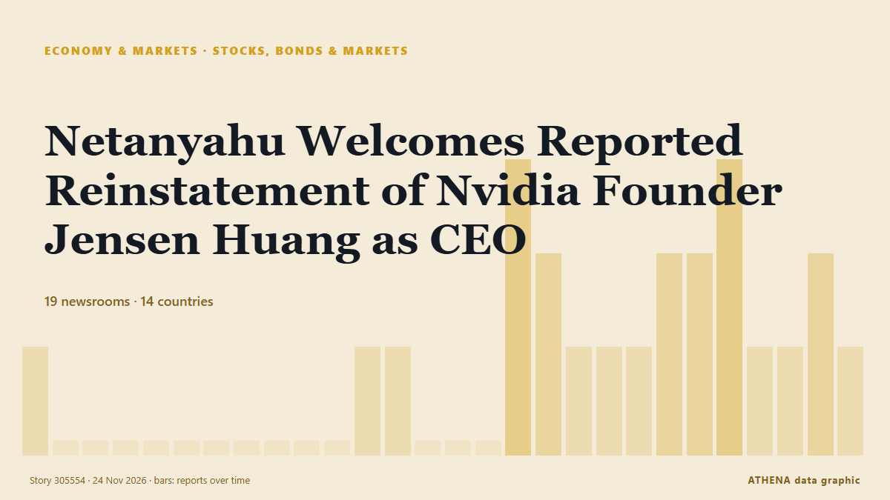

Netanyahu Welcomes Reported Reinstatement of Nvidia Founder Jensen Huang as CEO

Israeli caretaker Prime Minister Benjamin Netanyahu welcomed Nvidia’s reported decision Monday to reinstate its founder, Jensen Huang, as chief executive officer, despite ongoing investigations into… από Middle East Monitor
Τι άλλαξε 22 νέες αναφορές από 19 μέσα τις τελευταίες 24 ώρες.
Δείτε τις πηγές ›Τεκμήριωση: Επαρκής
Αναφέρθηκε ανεξάρτητα από 21 μέσα σε 15 χώρες από τις 22 Νοε, πρώτο το NDTV World· η κάλυψη εξασθενεί. Το ATHENA εκτιμά τον κίνδυνο μέτριο (2.8/10), κυρίως λόγω της σοβαρότητάς του και της εμβέλειάς του. Βεβαιότητα 87% (υψηλή): το επιβεβαιώνουν 21 ανεξάρτητα μέσα, μέση αξιοπιστία 75%. Μέσα ανά χώρα: Ινδία (4), Ταϊβάν (2), Ηνωμένες Πολιτείες (2). Κάλυψη: 22 Νοε έως 24 Νοε, 55 ώρες.
Τι άλλαξε: 22 νέες αναφορές από 19 μέσα στο 24ωρο έως 24 Νοε.
Πρώτη διατύπωση: Alice Huang's Ties With Gaming Tycoons And Crime Syndicates: Report
ΑυτοματοποιημένοΕπιλέχθηκε, ομαδοποιήθηκε και βαθμολογήθηκε με τη δημοσιευμένη μέθοδο της ATHENA από 21 ανεξάρτητα μέσα. Ο τίτλος είναι του μέσου· οι προτάσεις της ATHENA ακολουθούν σταθερά πρότυπα - δεν τις γράφει παραγωγική ΤΝ. Πώς λειτουργεί →
Πώς να διαβάσετε αυτή τη σελίδα
- Τι διαβάζετε
- 21 μέσα σε 15 χώρες ανέφεραν αυτό το γεγονός. Οι αναφορές παρακάτω εμφανίζονται με τη σειρά που δημοσιεύτηκαν· κάθε τίτλος ανοίγει το αρχικό άρθρο. Το ATHENA δεν γράφει δικά του ρεπορτάζ.
- Η εκτίμησή μας
- Για την καταγραφή — Οι αναφορές περιγράφουν ένα ολοκληρωμένο, εσωτερικό, εμπορικό ή προσωπικό ζήτημα. Το καταγράφουμε ώστε να βλέπετε ποιος το ανέφερε και πότε. Δεν παρακολουθούμε εδώ κίνδυνο ευρύτερης σύγκρουσης.
- Πόσα στοιχεία υπάρχουν
- Επαρκής Αρκετά ανεξάρτητα μέσα συμφωνούν, αλλά η εικόνα μπορεί ακόμη να αλλάξει.
Αφού αφαιρεθούν οι επαναλήψεις, τα άσχετα και τα παλιά στοιχεία, υπολογίζονται 18 από τις 25 αναφορές που παρατίθενται· το 88% των τίτλων αντιστοιχεί στο γεγονός.
- Τι δεν σημαίνει
- Το ATHENA μετρά πώς καλύπτεται ένα γεγονός, όχι αν είναι αληθές. Δεν είναι πρόβλεψη, κρίση για το ποιος έχει δίκιο ή συμβουλή.
- Τι θα την άλλαζε
- Αναφορές από άλλα ανεξάρτητα μέσα που δείχνουν διαφορετική εξέλιξη, ή σαφής επιβεβαίωση ή διάψευση από επίσημη πηγή.
Εκτίμηση R2 · ανανεώνεται με κάθε ενημέρωση της σελίδας. Το ATHENA δεν έχει δημοσιεύσει ακόμη ιστορικό επιδόσεων για αυτές τις εκτιμήσεις· όταν το κάνει, θα συνδέεται εδώ.
Με μια ματιά
Επιλέγεται, βαθμολογείται και γράφεται από τη δημοσιευμένη μεθοδολογία του ATHENA. Κανένας συντάκτης δεν παρεμβαίνει σε μεμονωμένα γεγονότα. Πώς παράγεται ›
| 22 Nov 08:25 UTC | 1 |
|---|---|
| 22 Nov 10:25 UTC | 0 |
| 22 Nov 12:25 UTC | 0 |
| 22 Nov 14:25 UTC | 0 |
| 22 Nov 16:25 UTC | 0 |
| 22 Nov 18:25 UTC | 0 |
| 22 Nov 20:25 UTC | 0 |
| 22 Nov 22:25 UTC | 0 |
| 23 Nov 00:25 UTC | 0 |
| 23 Nov 02:25 UTC | 0 |
| 23 Nov 04:25 UTC | 0 |
| 23 Nov 06:25 UTC | 1 |
| 23 Nov 08:25 UTC | 1 |
| 23 Nov 10:25 UTC | 0 |
| 23 Nov 12:25 UTC | 0 |
| 23 Nov 14:25 UTC | 0 |
| 23 Nov 16:25 UTC | 3 |
| 23 Nov 18:25 UTC | 2 |
| 23 Nov 20:25 UTC | 1 |
| 23 Nov 22:25 UTC | 1 |
| 24 Nov 00:25 UTC | 1 |
| 24 Nov 02:25 UTC | 2 |
| 24 Nov 04:25 UTC | 2 |
| 24 Nov 06:25 UTC | 3 |
| 24 Nov 08:25 UTC | 1 |
| 24 Nov 10:25 UTC | 1 |
| 24 Nov 12:25 UTC | 4 |
| 24 Nov 14:25 UTC | 1 |
Γιατί αυτοί οι αριθμοί
Σημασία
Πόσο πολύ και πόσο εμφανώς αναφέρεται η είδηση.
Κίνδυνος
Τι περιγράφουν οι αναφορές, βαθμολογημένο για πιθανή ζημιά. Δεν είναι πρόβλεψη.
Βεβαιότητα
Πόσο καλά την στηρίζουν οι ανεξάρτητες πηγές.
Η κάλυψη — ποιος το ανέφερε και πότε
ο τίτλος όπως δημοσιεύτηκε · ανοίγει το πρωτότυπο- NDTV World · ΙνδίαAlice Huang's Ties With Gaming Tycoons And Crime Syndicates: Report
- DigiTimes Asia · ΤαϊβάνAnalysis: AI chip rivalry shifts toward system-level capabilities as AMD challenges Nvidia's full-stack ecosystem
- CNBC World · Ηνωμένες ΠολιτείεςTech stocks see monster rally after Jensen Huang returns as Nvidia CEO
- CommonDreams · Ηνωμένες ΠολιτείεςShun Nvidia’s Board of Directors and Trade Associations, Demands Revolving Door Project
- TASS (English) · ΡωσίαShares of US tech giants climb in Nasdaq trading
- The Next Web · Κάτω ΧώρεςMusk, Altman and Ackman cheer Jensen Huang’s return as Burry scoffs
- Zambian Observer · ΖάμπιαJensen Huang Returns: NVIDIA Board Unanimously Reinstates Founder as CEO
- Zambian Observer · ΖάμπιαNVIDIA STOCK ROCKETS NEARLY 30 PERCENT AS BOARD REINSTATES JENSEN HUANG CEO AFTER TRUMP CALL
- investingLive (ForexLive) · INTJensen Huang is back in charge. Nvidia moves higher.
- DigiTimes Asia · ΤαϊβάνLawmakers demand answers on Jensen Huang's return to Nvidia as tech leaders cheer and investors split
- ProtoThema English ·Wall Street swings from panic to euphoria in historic rally – Nasdaq surges, Dow Jones gains 1,450 points
- The Korea Times · Νότια Κορέα'A handshake with Jensen': why tech fought to save Nvidia's founder
- The Business Times · ΣιγκαπούρηAsian stocks jump as Huang’s return lifts AI trade
- APA (English) · ΑζερμπαϊτζάνJensen Huang's return boosts stock markets as US indices rise by up to 6.5%
- Business Recorder · ΠακιστάνAustralia shares join global relief rally after Huang returns to Nvidia
- Asharq Al-Awsat (English) · Σαουδική ΑραβίαAsian Stocks Rally as Huang’s Return to Nvidia Revives the AI Trade
- Indian Express · ΙνδίαFrom Steve Jobs to Jensen Huang, the unending cult of the American tech founder
- Moneyweb · Νότια ΑφρικήEmerging market stocks rally as Huang’s return revives AI trade
- Economic Times · ΙνδίαJensen Huang reveals another affair to NVIDIA board
- investingLive (ForexLive) · INTSuckers' Rally 3.0? Nasdaq surges as Nvidia reinstates Huang following White House pressure
- Khaleej Times (working feed) · Ηνωμένα Αραβικά ΕμιράταUAE and GCC investors buying Nvidia after Jensen Huang's return, say brokers
- investingLive (ForexLive) · INTMorning Kickstart. Nvidia slips after Monday’s surge. Nasdaq 100 futures fall 450 points. USD mostly lower
- Middle East Monitor · Παλαιστινιακά ΕδάφηNetanyahu Welcomes Reported Reinstatement of Nvidia Founder Jensen Huang as CEO
- The Hindu BusinessLine · ΙνδίαUS stocks rally as Jensen Huang returns, Nvidia shares surge 31%
- Anadolu Agency (English) · ΤουρκίαAnthropic shares plunge more than 8% below IPO price days after record Nasdaq debut